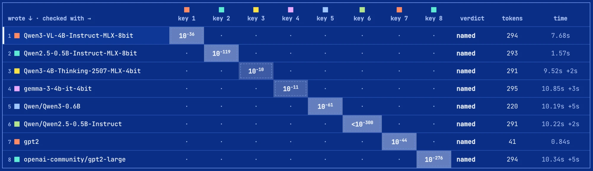

Each row is one model's replies. Each column is one model's key. A cell shows the median p-value, corrected across all keys, when that model's replies are checked with that key. Only the diagonal should light up.
Each dot is one reply checked with its own model's key. Left of the line is below the threshold, so the model is named. Confident chat models give fewer random choices per token for the fingerprint to ride on, so their dots sit closer to the line.
"Strongest wrong key" is the highest z-score any other model's key reached on this model's replies. Ordinary text scores around 0, and a match needs roughly z ≥ 5.
Section 04 of the demo, "Run every model", runs one prompt through every model and fills in this matrix live.
